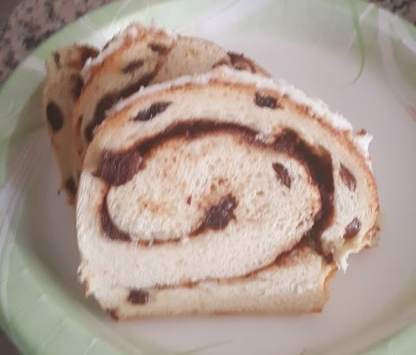
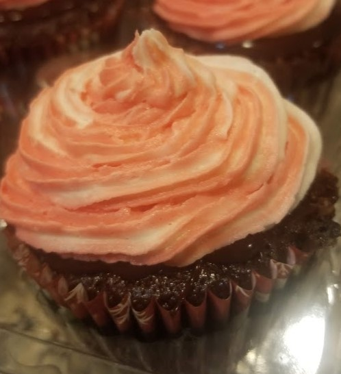
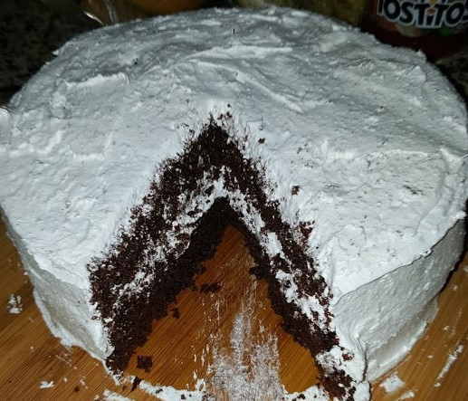
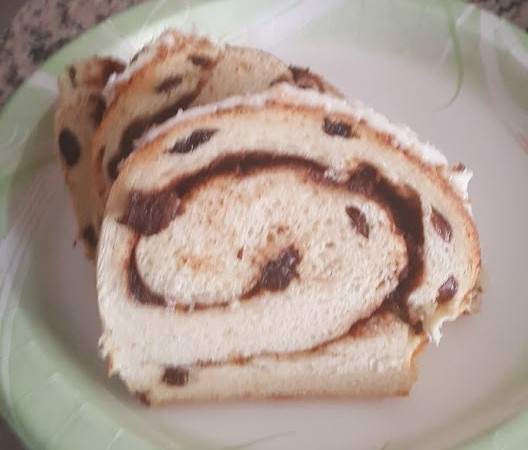
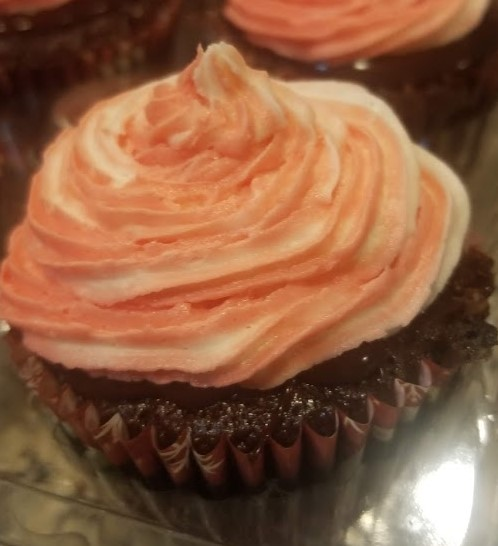
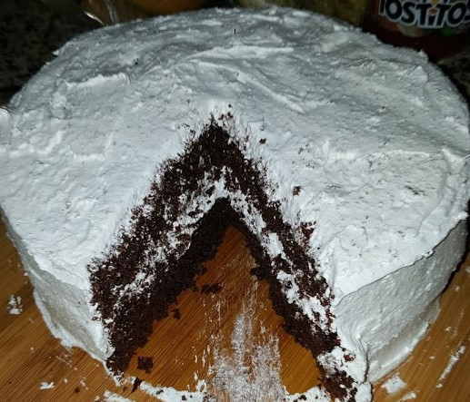

Let's talk about one of my hobbies.
I know cooking and baking is fairly common for people to do and do well. But, cooking while listening to Billy Joel is one of my happy places in life. Be it in my own kitchen or someone else's kitchen, I love the feeling when you start with nothing but raw ingredients and can fashion a meal or baked goods out of it. If I was asked what my signature recipe is, it would probably have to be my marinara sauce, which the originating recipe is referenced on the recipe page here. Typically though, I find more enjoyment in baking and also find I take more pictures of stuff I bake. Below, I've got a few pictures of some of my baked goods.
 




